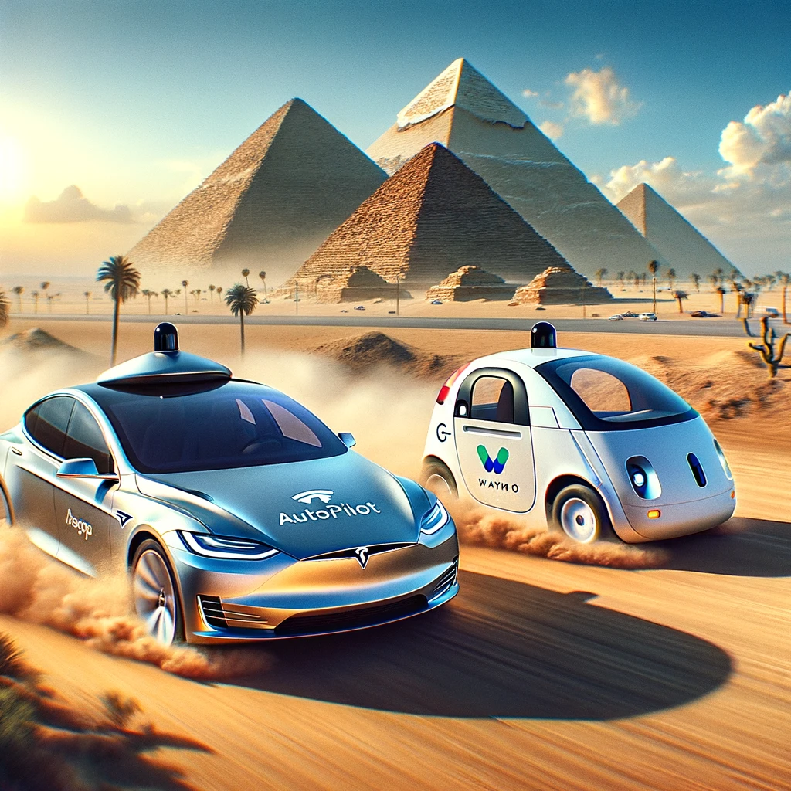

Welcome to the first lecture of our series on Machine Learning (ML) and Artificial Intelligence (AI)
Today, we will explore the foundational concepts that define these fields, trace their development, and examine some of their most significant applications. This lecture aims to provide a clear understanding of the differences and interconnections between AI and ML, debunk some of the myths, and set a solid groundwork for deeper exploration in subsequent lectures.
Machine Learning and Large Language Models
Machine Learning (ML) and Large Language Models (LLMs) have a significant and intrinsic relationship where ML serves as the foundational technology enabling the development and functioning of LLMs.
Machine Learning: The Foundation
Machine Learning is a subset of artificial intelligence that involves training algorithms to recognize patterns, make decisions, and predictions based on data. The ML paradigm shifts from explicitly programming rules to creating algorithms that can learn from and make decisions based on data.
Large Language Models: A Specialization within ML
Large Language Models like GPT (from OpenAI), BERT (developed by Google), and others, are specific applications of machine learning focused on processing and understanding natural language. LLMs are trained using deep learning, a subset of machine learning, on vast amounts of text data. This training involves the following ML concepts and methodologies:
- Supervised Learning: Most LLMs initially rely on supervised learning where the model is trained on labeled datasets.
- Unsupervised Learning: Some aspects of LLM training involve unsupervised learning where models try to make sense of data without explicit labels.
- Neural Networks and Deep Learning: LLMs are built using large neural networks, particularly transformer architectures.
Key Relationships and Applications
Natural Language Processing (NLP): LLMs are a cornerstone of modern NLP, enabling applications from machine translation and summarization to question-answering and sentiment analysis. They represent a shift towards more general and powerful language understanding capabilities compared to earlier models.
Transfer Learning: LLMs are often pre-trained on general tasks and then fine-tuned for specific applications. This is an example of transfer learning, where a model developed for one task is reused as the starting point for a model on a second task.
Scaling and Performance: The performance of language models generally improves with an increasing amount of training data and model size, highlighting ML principles like feature representation and model capacity.
Differences Between AI and ML
While AI is a broader concept concerning creating machines capable of performing tasks that seem intelligent, ML is a specific subset of AI that trains a machine how to learn. ML is one way to achieve AI.
Additional Materials
- Generative AI in a Nutshell - how to survive and thrive in the age of AI - Basically a full day AI course crammed into 18 mins of drawing & talking. Target audience: Everyone.
- Stanford University School of Engineering 2017 - Lecture 1 | Natural Language Processing with Deep Learning: A foundational lecture on Natural Language Processing which serves as the start of the story we want to explore.
Everyday Life Encounters with Embedded Machine Learning and Deep Learning Technologies
In today's digital age, machine learning, deep learning, and large language models are integral to a vast array of technologies that people encounter every day. These technologies have been seamlessly integrated into products and services across various industries, enhancing user experiences and providing personalized content. Here are some common examples that many people interact with on a daily basis:
Smart Personal Assistants
Examples: Siri, Alexa, Google Assistant.
Technology: These devices use NLP powered by large language models to understand and respond to spoken commands.
Recommendation Systems
Examples: Netflix, Spotify, Amazon.
Technology: Machine learning algorithms suggest content based on user behavior and preferences.
Social Media Feeds
Examples: Facebook, Instagram, Twitter.
Technology: Algorithms personalize feeds and moderate content using ML techniques.
Email Spam and Phishing Detection
Examples: Gmail, Outlook.
Technology: Deep learning models identify and filter out unwanted emails.
Autonomous Vehicles
Examples: Tesla Autopilot, Google Waymo.
Technology: Deep learning processes sensor data for safe navigation.
Facial Recognition Systems
Examples: iPhone Face ID, Surveillance Systems.
Technology: CNNs are utilized for tasks such as secure authentication.
Voice-to-Text Services
Examples: Voice typing on Google Docs, Real-time captioning on YouTube.
Technology: Speech recognition converts spoken language into text.
Customer Service Chatbots
Examples: Chatbots on banking websites, customer support on e-commerce sites.
Technology: Chatbots understand and process customer inquiries using NLP.
Sentiment Analysis
Examples: Product reviews, market research.
Technology: ML models analyze text to gauge public sentiment.
Healthcare Diagnostics
Examples: Radiology imaging, predictive diagnostics.
Technology: Deep learning models assist in diagnosing and predicting patient outcomes.